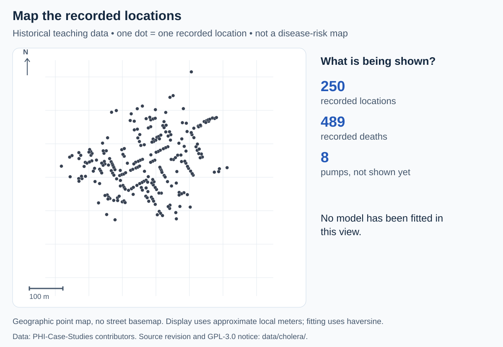

Five-minute GeoAI lesson · Historical teaching data · No account needed
From John Snow’s map to GeoAI
Map the observations. Find geographic groups. Reveal context. Ask what evidence is missing.
Saved DBSCAN results: these controls switch between results already computed from the bundled data. Python is not running on this page. The runnable notebook recomputes the model in your browser.
250 locations · 489 recorded deaths · No groups fitted in this view.

What do you notice?
A map displays the observations. It has not learned a pattern or identified a cause. Ask the audience where they see groups, then select “Find groups”.
Keep the boundary: groups are not risk categories. Pumps never enter the model. There are no population denominators, individual water-use observations or causal labels in these CSVs. No contaminated pump, safe location or intervention effect is inferred.
Run notebook 21 · Presenter’s walkthrough · Open saved 50-meter project in GeoLibre
The optional GeoLibre link opens a network-based viewer with pumps visible; it does not follow these controls. GeoLibre: Qiusheng Wu and contributors, citation.